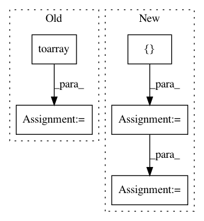

750d6a20cb203261e17d5f2709a00ec62a37dfed,tests/test_pyglmnet.py,,test_glmnet,#,13
Before Change
// coefficients
beta0 = np.random.rand()
beta = sps.rand(n_features, 1, density=density).toarray()
distrs = ["poisson", "poissonexp", "normal", "binomial"]
learning_rate = 2e-1
for distr in distrs:
After Change
np.random.normal(0.0, 1.0, [n_features, 1])
distrs = ["poisson", "poissonexp", "normal", "binomial"]
solvers = ["batch-gradient", "cdfast"]
learning_rate = 2e-1
for solver in solvers:
for distr in distrs:
glm = GLM(distr, learning_rate=learning_rate,
solver=solver)
assert_true(repr(glm))
np.random.seed(glm.random_state)
X_train = np.random.normal(0.0, 1.0, [n_samples, n_features])
y_train = glm.simulate(beta0, beta, X_train)
X_train = scaler.fit_transform(X_train)
glm.fit(X_train, y_train)
beta_ = glm.fit_[-1]["beta"][:]
assert_allclose(beta[:], beta_, atol=0.5) // check fit
y_pred = glm.predict(scaler.transform(X_train))
assert_equal(y_pred.shape, (n_lambda, X_train.shape[0]))
// checks for slicing.
glm = glm[:3]
glm_copy = glm.copy()
assert_true(glm_copy is not glm)
assert_equal(len(glm.reg_lambda), 3)
In pattern: SUPERPATTERN
Frequency: 3
Non-data size: 5
Instances
Project Name: glm-tools/pyglmnet
Commit Name: 750d6a20cb203261e17d5f2709a00ec62a37dfed
Time: 2016-07-20
Author: pavan.ramkumar@gmail.com
File Name: tests/test_pyglmnet.py
Class Name:
Method Name: test_glmnet
Project Name: RasaHQ/rasa
Commit Name: 815a9afb26358230fc49704edbfbbeb048f55937
Time: 2020-06-05
Author: tabergma@gmail.com
File Name: tests/nlu/featurizers/test_count_vectors_featurizer.py
Class Name:
Method Name: test_count_vector_featurizer
Project Name: epfl-lts2/pygsp
Commit Name: 508545f2c9a982a38a243ec95c7a5cdd266ed358
Time: 2017-11-23
Author: michael.defferrard@epfl.ch
File Name: pygsp/tests/test_graphs.py
Class Name: TestCase
Method Name: test_degree